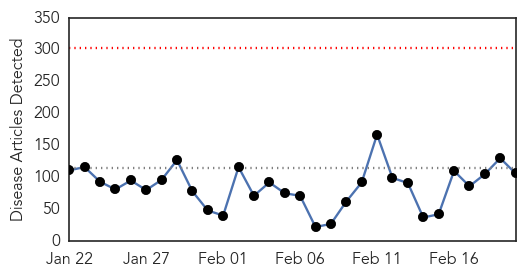
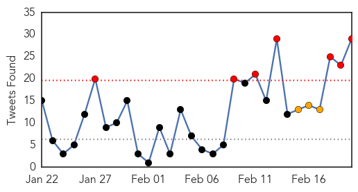
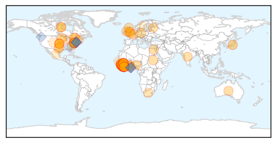
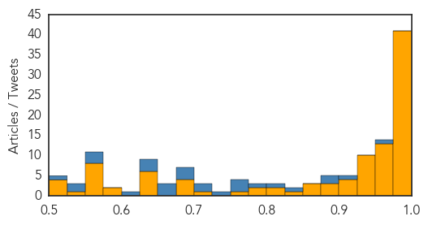
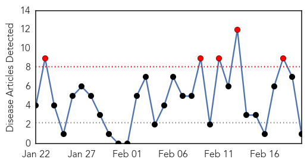

Ebola
30-Day Web Trend
0 alerts, 0 warnings

30-Day Twitter Trend
10 alerts, 2 warnings

Article Locations
Article Confidences
Top Articles:
- 1.000
- Study: Limited airborne transmission of Ebola 'very likely'
- 1.000
- Finishing Off Ebola
- 1.000
- WHO-approved Ebola test could be game changer
- 1.000
- WHO Warns Unsafe Procedures Hurting Anti-Ebola Efforts
- 1.000
- WHO Warns Unsafe Procedures Hurting Anti-Ebola Efforts
- 1.000
- Liberia lifts Ebola curfew, re-opens borders
- 1.000
- Researchers ignite fears of airborne-Ebola
- 0.999
- CDC ready to vaccinate 6,000 against Ebola
- 0.999
- UN health agency approves rapid test for Ebola as decline in cases appears to level off
- 0.999
- Terrifying footage from inside the Ebola death zone ... and the brave Australian nurse who is leading the fight against the killer disease
- 0.999
- Ebola crisis: Liberia lifts curfew, re-opens borders as epidemic retreats
- 0.999
- UN health agency approves rapid test for Ebola, as decline in cases appears to level off - Sierra Leone
- 0.998
- Ebola crisis: Liberia to open borders as infection falls
- 0.998
- UN hails progress on Ebola but warns against fatigue
- 0.998
- Hunger: Ebola's hidden toll in Sierra Leone
- 0.997
- UN Ebola chief hails successes, warns of fatigue
- 0.996
- Patients ‘under observation’ in Liberia after Ebola scare
- 0.996
- Attempt to Muzzle Free Speech Rejected
- 0.996
- Opinion: For young Liberian rape victim, a broken system proves fatal
- 0.996
- West Africa: Ecowas Deploys 250 Election Observers to Nigeria
- 0.996
- Lungi Murder Trialjudge Orders Accused Statement to Be Tendered
- 0.996
- AIG Kalia Sesay Says 'No Tribalism in SLP'
- 0.996
- Salone to Benefit From CAVB Volleyball Projects
- 0.996
- Animated videos bring Ebola education to West Africa
- 0.994
- More than 800 health personnel infected with Ebola
- 0.994
- Ebola battle continues
- 0.994
- Over 800 health workers infected with Ebola
- 0.993
- Fifteen-minute Ebola test approved
- 0.993
- Fifteen Minute Ebola Test Approved
- 0.993
- Patients 'under observation' in Liberia after Ebola scare
- 0.991
- Liberia schools reopen amid Ebola recovery
- 0.988
- Report shows Ebola funds corruption
- 0.987
- Ebola Orphans food drive to be held in Minnesota
- 0.983
- Medical treatment of an Ebola-infected doctor—ethics over costs?
- 0.983
- Ban Ki Moon calls for surge efforts to support Guinea and Sierra Leone
- 0.981
- Obama to meet Liberian president on Ebola recovery
- 0.980
- Pa. brewers take aim at Teutonic traditions
- 0.980
- I-Team gets exclusive peek into BCDC
- 0.979
- "Breakthrough" Ebola test kit unveiled
- 0.976
- Liberia lifts Ebola curfew, re-opens borders: Presidency
- 0.976
- Liberia to end Ebola curfew, open land border crossings
- 0.975
- Albertan oversees spending of $100K grant for Ebola relief in Sierra Leone
- 0.974
- Guinea: UNICEF Guinea Ebola Situation Report, 18 February 2015
- 0.973
- Obama to meet Liberian president on Ebola recovery
- 0.973
- Largest-Yet Group of Troops Begins Ebola Quarantine at JBLM
- 0.972
- The Intelligencer / Wheeling News-Register
- 0.971
- Obama to meet Liberian president on Ebola recovery
- 0.965
- WHO approves quick Ebola test
- 0.965
- Ebola nations in 60-day eradication target
- 0.963
- siliconrepublic.com - Ireland's Technology News Service
Showing top 50 articles...
Top Tweets:
- 0.965
- Report from Lofa, Liberia: Ebola Vaccine Stigma Impacts Polio and Measles ... - Ebola Deeply http://t.co/lNaTSdUDrm ebola EVD
- 0.953
- World's first 15-minute Ebola test approved - Mashable http://t.co/04m4ejjZIc ebola EVD
- 0.944
- Rapid Isolation and Treatment of Ebola (RITE) strategy helping end Liberia Ebola epidemic. New data http://t.co/Sl8GW8YwNk
- 0.934
- WHO approves breakthrough 15-minute Ebola test - Reuters http://t.co/xeEFLJsLAF ebola EVD
- 0.934
- WHO approves breakthrough 15-minute Ebola test - Reuters http://t.co/VMGSNIWY5d ebola EVD
- 0.934
- WHO approves breakthrough 15-minute Ebola test - Reuters http://t.co/7AL3KfaoIa ebola EVD
- 0.932
- Ebola doctor fears deadly scenes may yet be repeated - Yahoo News http://t.co/7ZGQMTtRn2 ebola EVD
- 0.928
- RT: Rapid Isolation and Treatment of Ebola (RITE) strategy helping end Liberia Ebola epidemic. New data http://t.co/Sl8GW8Yw…
- 0.928
- RT: Rapid Isolation and Treatment of Ebola (RITE) strategy helping end Liberia Ebola epidemic. New data http://t.co/Sl8GW8Yw…
- 0.914
- Ebola Update: 23,218 confirmed, probable & suspected cases reported in 3 most affected countries, with 9,365 deaths. EbolaResponse
- 0.909
- Fifteen-minute Ebola test approved http://t.co/eb73Azzd63 Ebola Ebolaresponse
- 0.902
- Ebola drives increase in sexual violence in Sierra Leone, experts say - Al Jazeera America http://t.co/uXszsgZs38 ebola EVD
- 0.901
- RT: .@WHO reports 128 new confirmed cases of Ebola in week to 15 February is a decline from 144 cases in week to 8 February. Ebola…
- 0.886
- CDC helping to prepare a new Ebola vaccine trial in Sierra Leone. Read more via http://t.co/jzOlFv8LaK
- 0.885
- RT: Then came Ebola ??
- 0.883
- New funding announced for US Ebola preparedness - The Hill http://t.co/uxXwXf5PwH ebola EVD
- 0.878
- Liberia lifts Ebola curfew, re-opens borders - Business Insider http://t.co/vkBWMYfVrZ ebola EVD
- 0.876
- Ebola Doctor Fears Deadly Scenes May Yet be Repeated - Voice of America http://t.co/4wezT2RxWc ebola EVD
- 0.865
- Ebola crisis: Liberia to open borders as infection falls - BBC News http://t.co/oJNFETrRqQ ebola EVD
- 0.864
- Trials using Ebola survivors' blood for treatment to start in Sierra Leone - The Guardian http://t.co/YiBcQegkwu ebola EVD
- 0.844
- RT: RITE strategy—rapid, coordinated response to Ebola cases in remote areas—now used in Sierra Leone and Guinea. http://t.c…
- 0.839
- Finishing Off Ebola - New York Times http://t.co/vvN6t9FC96 ebola EVD
- 0.818
- : Our medical team in Liberia working to bring Ebola cases to zero.A moment they confirmed patient status as negative!
- 0.808
- RITE strategy—rapid, coordinated response to Ebola cases in remote areas—now used in Sierra Leone and Guinea. http://t.co/Sl8GW8YwNk
- 0.805
- Ebola rapid test approved by World Health Organisation - http://t.co/9p21lKLIva http://t.co/ixHQbLW57O ebola EVD
- 0.804
- Obama to host Liberian president, discuss Ebola response - Reuters http://t.co/zHUeNqroMe ebola EVD
- 0.799
- Terrifying footage from inside the Ebola death zone ... and the brave ... - Daily Mail http://t.co/9jdm6nmr6p ebola EVD
- 0.779
- CDC working with Sierra Leone to vaccinate up to 6,000 health care workers in Ebola vaccine trial. @NBCnews http://t.co/jzOlFv8LaK
- 0.770
- RT: Ebola cases are down in Sierra Leone but isn't relaxing. A quick look at ongoing efforts in StoppingEbola http:/…
- 0.720
- Life After Ebola: What It Takes For A Village To Be Resilient - NPR (blog) http://t.co/5N0XMGyQuO ebola EVD
- 0.702
- Liberia to End Ebola Curfew, Open Land Border Crossings - ABC News http://t.co/EFqlN1neIr ebola EVD
- 0.696
- .@WHO reports 128 new confirmed cases of Ebola in week to 15 February is a decline from 144 cases in week to 8 February. EbolaResponse
- 0.670
- AFD blog `@WHO Approves Rapid Ebola Test' http://t.co/Q33UUMHHO1
- 0.634
- Whether traveling by canoe or walking miles to find Ebola cases, RITE teams helping Liberia get to zero cases. http://t.co/Sl8GW9g7ES
Meningitis
30-Day Web Trend
5 alerts, 0 warnings

30-Day Twitter Trend
0 alerts, 0 warnings

Article Locations

Article Confidences

Top Articles:
Top Tweets:
-
No tweets found for Feb 20, 2015